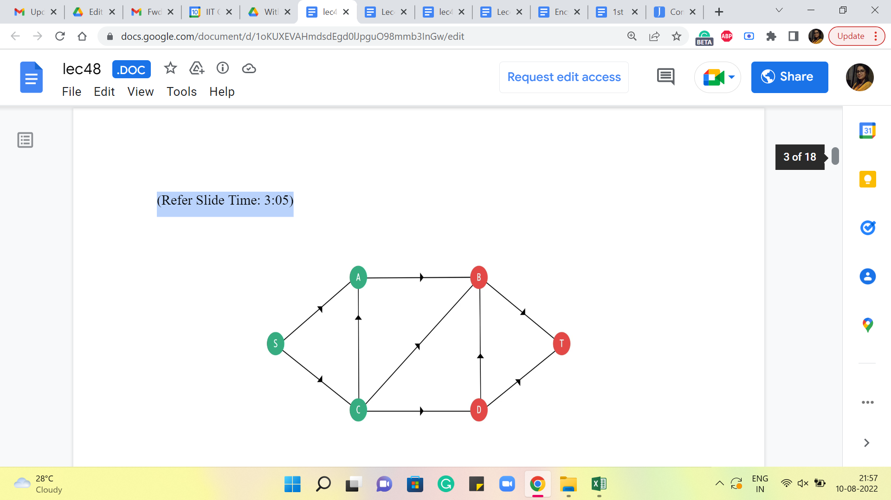
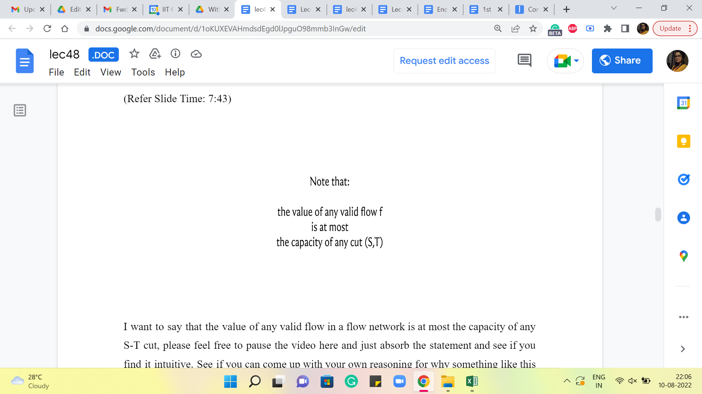
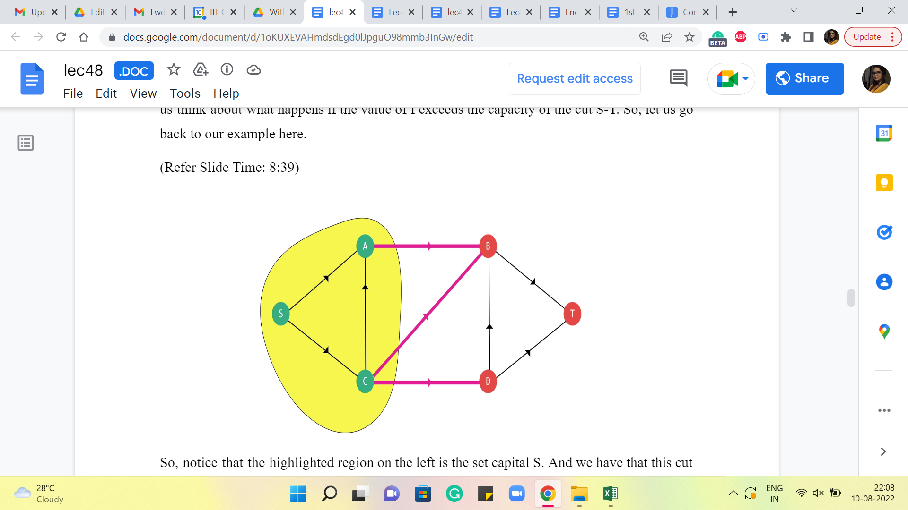
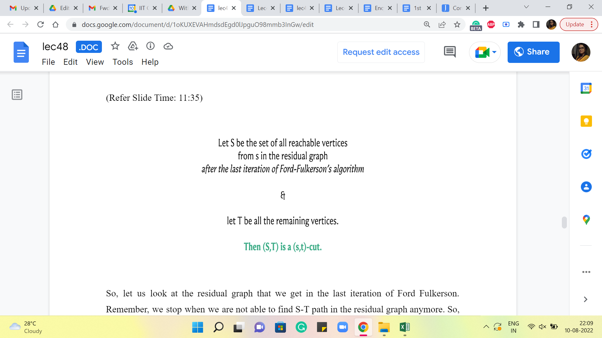
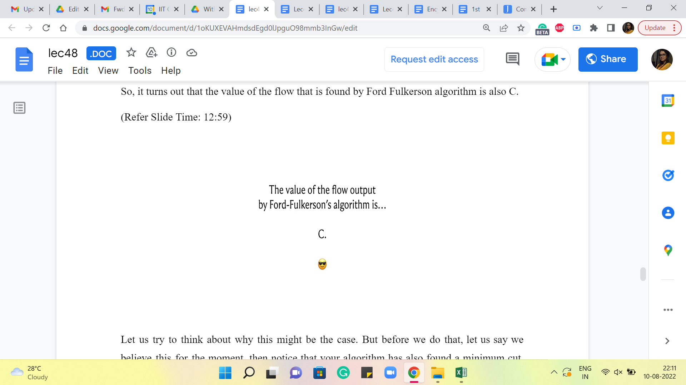
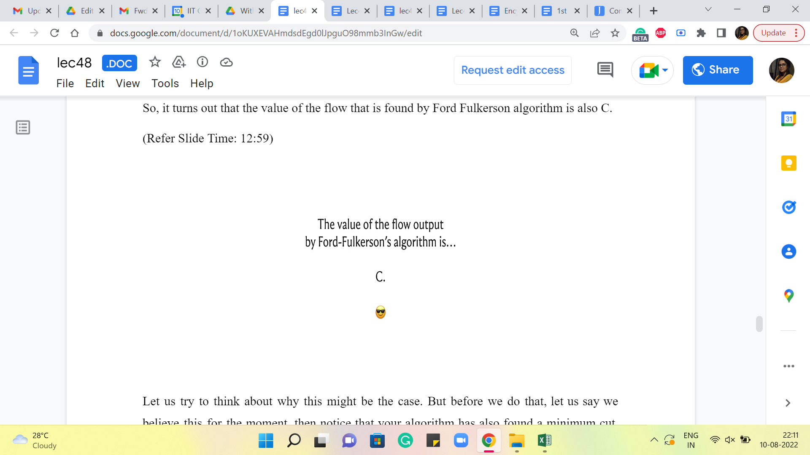

MaxFlow-MinCut Duality
Lecture - 48
MaxFlow-MinCut Duality
(Refer Slide Time: 0:11)

Welcome to the ninth week of Getting Started with Competitive Programming. So, this week we continue our exploration of network flows. But our perspective this time is going to be slightly different from the one that we had last week. So, if you remember, in week 8, our goal was to find a maximum valued flow in a flow network. So, the goal was to push as much material as we could from a designated source vertex to a designated target vertex.
This time, our goal will be somewhat the opposite. We want to see what is the minimum amount of damage that we need to do to the network to make sure that the target is unreachable from the source. So, this is called the problem of finding a minimum cut. And it turns out that it is intimately related to the problem of finding a maximum flow. In fact, so much so that without knowing it, you have already learned an algorithm to find a minimum cut because the Ford-Fulkerson’s algorithm for finding a maximum flow as a by-product automatically finds a minimum cut as well.
Now, as you can imagine, the minimum cut problem has a variety of applications. One that is easy to visualize but probably a bit depressing to think about is war strategy. So, let us say that you are planning out an attack on the enemy camp. And what you are trying to ensure is that no useful supplies reach them from the other side. Then you may want to strategically destroy roads so that all connections are cut off. You either destroy roads or monitor them, whatever you do.
Now, monitoring or destroying is expensive. So, you want to be able to identify the smallest number of key roads or locations that need this kind of attention. Minimum cuts are also interesting because they give you a sense of the weak points in your network. Right. So, if you have a minimum cut at hand, then you know that if these edges were to be destroyed, then you lose all contact between the source and the target.
So, by identifying such minimum cuts, you may get ideas for how to strengthen your network and make it more robust. That goes into the realm of something called network design, which is a very interesting topic if you want to find out more about it. In the meantime, let us go ahead and talk about the relationship between MaxFlows and MinCuts, which is the topic of this module here.
(Refer Slide Time: 2:32)

So, what is a cut? Formally, it is a partition of the vertex set of a flow network into two parts, which we will typically denote by capital S and capital T. So, these capital letters correspond to vertex subsets. And the only thing that this partition must satisfy is the constraint that the source vertex belongs to one of the parts and the target vertex belongs to the other part. That is all that we need. Other than that, you could distribute the remaining vertices however you like, and it will still be a valid S-T cut. Let us take a look at an example of an S-T cut.
(Refer Slide Time: 3:05 and 3:35)
 

Here is a flow network. The capacities are not shown here because they are not so relevant at the moment. You have the source vertex S, and the target vertex T on the extremes of your screen. And you will notice that all the green vertices, being the set capital S and all the red vertices being the set capital T forms a valid S-T cut in this particular flow network. Now, given a cut like this, we are specifically interested in edges that cross the cut. What do I mean by this?
Well, an edge from u to v is set to cross the cut if u belongs to S and v belongs to T. So, in this example, once again, you can see that these are all the edges that cross the cut. They have been marked in pink. And hopefully, you agree that this is consistent with the definition that we just gave. Now, what is the capacity of this cut? Well, you just add up the capacities of the edges that cross the cut, and that is going to be the capacity of the cut. Okay.
(Refer Slide Time: 3:59 and 4:08)


Now, think about what happens when you delete all the edges that cross an S-T cut. Take a moment, if you would like to go back to the example and see what happens. And see if you notice something particularly spectacular that happens when you remove all the edges crossing any S-T cut.
(Refer Slide Time: 4:25)


Well, let us actually look at what happens in this example. So, we have these edges that cross the cut. And here is what you get when you remove these edges. Notice that when you do this, you have removed all possible connections from S to T. So, I would like to claim that this is true not only for this example but in general. If you were to delete all the edges that cross an S-T cut, then you end up disconnecting S from T in this graph, which is to say that after these edges are gone, there is no way for you to travel from S to T along a valid path.
To see why this is true. Let us assume that all the edges in an S-T cut have been deleted. And let us suppose for the sake of contradiction, that you still have a path from S to T. And let us say that path looks like this. So, clearly, just by definition, this path starts from the source vertex and ends at the target vertex. Now, let us label the intermediate vertices of this path depending on which side of the garden they belong to. So, just for simplicity, you could think of coloring these vertices green or red, depending on whether they belong to capital S or capital T. Right.
(Refer Slide Time: 5:07)


So, when we go ahead and do that, notice that at some point, you must change color on this path because it is starting with a green vertex, and you are ending at a red vertex. So, at some point, there must be two consecutive vertices on this path, which have opposite colors. Right. So, if you can find such a consecutive pair, then you have also found an edge that crosses the cut.
But remember that this edge is not there because we deleted all the edges that cross the cut. Therefore, this particular path has been destroyed and is in fact not there. So, depending on your taste, you can think of this as proof by contradiction, which simply says that this claimed path does not exist. Or you could think of it as a constructive proof, which says, well, let us go and examine every S-T path turn by turn.
And let us argue that at least one of the edges on any of these paths was, in fact, destroyed when we deleted all the edges in an S-T cut. Either way, the point is that removing all the edges in an S-T cut disconnects S from T. And that is why a cut, which has the smallest number of edges that crosses it, would correspond to a minimum effort way of destroying all connections between the source and the target, which was sort of the original goal that we set out for ourselves when I was introducing the MinCut problem back at the beginning of this discussion.
Also, recall that we are working with edges that have capacities and you could think of these numbers as being a reflection of how expensive it is going to be to destroy a particular edge. You can imagine that if these edges are modeling a road network, then a six-lane road, which of course has a large capacity is going to be more effort to destroy compared to some kaccha-pakka road, which has a capacity of maybe one bicycle at a time or something like this. Right.
So, this naturally motivates the definition of a minimum cut as being a cut, which has the smallest capacity. Once again, remember that the capacity of a cut is simply the sum of the capacities of all the edges that cross the cut. Alright. Now, that the definitions are out of the way, it is time to make our first connection between flows and cuts. So, here is a preliminary claim.
(Refer Slide Time: 7:43 and 8:23)
 
I want to say that the value of any valid flow in a flow network is at most the capacity of any S-T cut. Please feel free to pause the video here and just absorb this statement and see if you find it intuitive. See if you can come up with your own reasoning for why something like this would be true. Come back once you are ready.
Alright. So, we will not be proving this formally. If you are interested in proof that involves proper inequalities and everything, you can take a look at the references that have been linked to in the description. But what I will try to do instead is convey the main intuition for why you might expect this to be true.
So, let us consider any flow ‘f.’ Right. And let us fix an S-T cut, S-T, which is capital S capital T. Let us think about what happens if the value of ‘f’ exceeds the capacity of the cut S-T. Alright. So, let us go back to our example here.
(Refer Slide Time: 8:39)

So, notice that the highlighted region on the left is the set capital S. Right. And we have that this cut has a certain capacity – could be whatever you like. And let us say that you have managed to push your flow from S to T, which is higher, the value of this flow is greater than the capacity of this cut. Now intuitively, you can think of the cut as being some sort of a bottleneck between S and T.
It tells you, remember, when we were working with the trucks, right, we said that, well, there is only so much that you can push from S to T if this is going to be the situation that all of your trucks have to take one of these three roads that have been marked in pink. So, that essentially gives you a ‘bound’ for how many trucks can go through from S to T. So, in other words, if you have managed to push a flow whose value is more than the capacity of these three pink edges combined, then some of that flow is actually stuck on the yellow side of this network.
It cannot get out, it cannot go to the other side. But remember when we introduced the flow problem, we also talked about how the flow that goes out of the source is the same as the flow that lands on the target. So, it cannot really be that some of your flow is stuck on one side of the graph and does not reach the target. If that is happening, then somewhere you have violated the conservation constraints.
So, if you write down a few equations that involve starting from the starting value of the flow and relating it to the capacity of the cross edges, and applying the conservation constraint, you will see that you will end up with a contradiction if you start off with a flow that is more than the capacity of this particular cut.
(Refer Slide Time: 10:27)

So, what we know is that the value of any flow is bounded by the value of any cut. In particular, we could set this flow ‘f’ to be the MaxFlow, and we could choose this cut to be the MinCut, which tells us that the value of the maximum flow that you can achieve is bounded by the capacity of the minimum cut in this flow network. So, what we have discovered so far is that the capacity of a minimum cut gives us a target for the maximum value of the flow that we can hope to achieve. Right.
So, if you found a minimum cut and it has some capacity, then this is the best that you can hope for in terms of how much flow you can push from the source to the target. Now, the interesting question is, is this an achievable target? Can you always push this amount of flow corresponding to the capacity of our MinCut from S to T? And this is the question that we will try to address next. Now, let us take a look at the flow that we get from the Ford Fulkerson algorithm. The first thing I want to point out is that this algorithm already gives us an S-T cut.
(Refer Slide Time: 11:35)

So, let us look at the residual graph that we get in the last iteration of Ford Fulkerson. Remember, we stop when we are not able to find an S-T path in the residual graph anymore. So, let us look at all the vertices that are reachable from S in the residual graph that we obtained at the last step, the step where we got stuck. Notice that this set of reachable vertices does not contain the target vertex T because if it did, then we would not be stuck here. We would have found a path, and we would have augmented the flow along this path. Right.
So, we know that the set of all vertices that are reachable from the source in the residual graph at the end of the Ford Fulkerson algorithm is actually a set that contains the source vertex, and it does not contain the target vertex. That sounds familiar. Right. So, that is essentially a cut. So, you know that this is a valid S-T cut. And this is going to be a particularly interesting cut to work with.
(Refer Slide Time: 12:33 and 12:59)
 

Let us say that this particular cut has a capacity of C. Now I want you to think about what is the value of the flow that the Ford Fulkerson algorithm has found in terms of this capacity C. Pause the video here for a moment and just think about whether there might be a connection. Alright. So, it turns out that the value of the flow that is found by the Ford Fulkerson algorithm is also C.
Okay. Let us try to think about why this might be the case. But before we do that, let us say we believe this for the moment. Then notice that your algorithm has also found a minimum cut. Right. Because you have a flow whose value is C. You have a cut whose capacity is C. You know that this flow whose value is C is actually the maximum possible value of any flow in this flow network. So, you know that you cannot have a cat whose capacity is smaller than C. Right.
Because then this would violate the first inequality that we saw. So, in fact, the set of vertices that is reachable from S in the residual graph at the last iteration of Ford Fulkerson is also a minimum cut. The fact that that is a minimum cut, of course, relies on this observation here, which is that you have a flow whose value is equal to this capacity.
So, again, let us try and see why this is true. Like before, I will not be proving this formally, but hopefully, I will be able to share enough ideas based on which you can go and work out the details of a formal proof. So, to begin with, let us try to understand the value of a flow in terms of the edges that go between the parts of a cut.
(Refer Slide Time: 14:18)


So, in particular, let us fix a flow ‘f’ and let us fix an S-T cut, capital S capital T. Right. Now, it turns out that the value of the flow is the sum of the flows on the edges that cross the cut, and you have to adjust for the flow that is coming back from T to S. So, you also add up the flows on the edges that originate in the set capital T and have the other endpoint in the set capital S. And all the flow that is coming on these so-called back edges, you need to subtract this from the total flow that is going on the cross edges.
So, if you do that, the resulting number that you get will equal (to) the value of the flow itself. Now, if you think about it, this is fairly intuitive. It is essentially because of the conservation constraints that the amount of flow that you were able to push from S, or the amount of flow that lands at T, can also be understood in terms of, you know, the amount of flow that crosses any of these intermediate cuts.
And you really want to be looking at the net flow that crosses this intermediate cut, which is the flow that is on the cross edges adjusted for the flow that is coming back into the set capital S. So, again, this is something that you can confirm by a fairly straightforward calculation, which I will not get into. But once you understand that this is true, let us look at what is going on in the cut that is finally discovered by the Ford Fulkerson algorithm.
So, let us say that this cut that we are looking at is specifically the cut, which is obtained by considering all the vertices that are reachable from S in the residual graph in the last step of the Ford Fulkerson algorithm. So, now what is happening on the forward edges, which are the cross edges? Notice that each of these edges must be fully saturated by the flow. Because if they are not fully saturated by the flow, then in the residual graph, these edges would still be present with the residual capacity, which means that if you look at the vertices, which are sitting in T right now, at the other ends of these two blue edges, these vertices would not be in T, if these edges were not fully saturated.
They would still be reachable from S, and they would be pulled to the other side. So, hopefully, it is clear that the edges that are crossing this cut must be fully saturated by the flow. Again, if this was not the case, then your ‘cut’ would not be looking like this. Okay. So, we need all of these edges to be missing. The only way to make these edges vanish in the residual graph is by fully saturating them so that their residual capacities are 0.
On the other hand, let us look at these back edges in the flow network. Okay. So, these edges, I claim, cannot have any flow going through them. Because if you send any flow going through these edges, then in the residue graph, you would have introduced an artificial edge, which goes in the other direction, which would have a non-trivial capacity.
And once again, this would not be an accurate picture of the cut that you obtain at the last step, and you would get a contradiction. So, in fact, if you look at the S-T cut that you obtain, at the very end of Ford Fulkerson, the cut that is obtained by looking at the vertices reachable from S in the residual graph at the last iteration, then it must be the case that your MaxFlow, again, as discovered by Ford Fulkerson, must have the following form.
It saturates fully all the edges that cross this cut, and it does not touch the edges that come back from this cut, which is to say, edges that start in T and end in S, these I just do not have any flow going through them. Again, the reason for this is that if the flow did not look like this, then this cut also would not look like this, okay, and that is what we just discussed.
(Refer Slide Time: 18:18)


So, essentially, the value of this flow is in fact equal to the capacity of this cut. And both the flow and the cut have been discovered by this Ford Fulkerson algorithm. And we know from our previous discussions, that this flow is in fact, a max flow, from which we can conclude that this S-T cut must, in fact, be a MinCut.
This is something that we also mentioned a while ago because notice that if you have a cut, which was smaller than this, then this flow would have trouble getting through. Right. So, Ford Fulkerson witnesses the fact that the minimum cut target is, in fact, achievable. And it also finds this minimum cut for you. So, what more could you ask for? So, in the next module, where we look at a problem that requires you to find the MinCut, we will see how to adapt our implementation slightly, so that we can find this MinCut and work with it.
(Refer Slide Time: 19:16)

In the meantime, if you had to have one major takeaway from this module, it would be this equality, the equality of the value of the MaxFlow, and the capacity of a MinCut. The fact that the value of the maximum flow is bounded above by the capacity of a minimum cut, I think, is pretty intuitive. And that is something that can be appreciated just pretty much directly from the definitions.
But the fact that this upper bound can always be achieved, and the fact that that is a consequence of Ford Fulkerson, you have a constructive way of getting there, I think, it is absolutely amazing. And this is one of the most elegant dualities in graph theory and it can be used as a basis for proving some other very interesting dualities as well. And we will see one example of that in the last module this week.
In the meantime, we would like to talk about how you can implement the process of finding a minimum cut. Because you have already implemented the MaxFlow algorithm, this turns out to be super easy to do. And that is what we are going to see in the context of this specific problem in the next module. So, I will see you there!